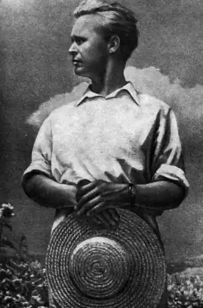
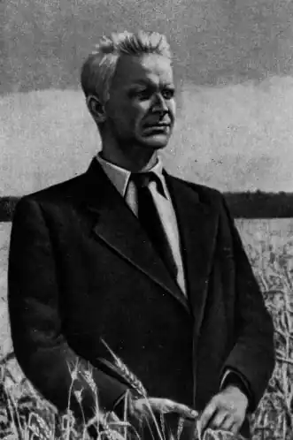
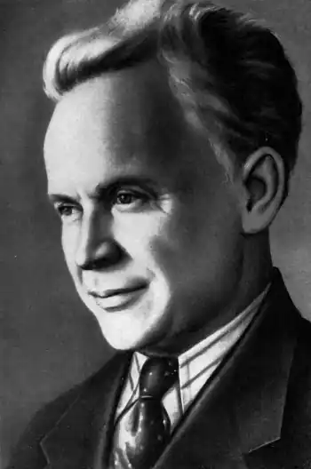
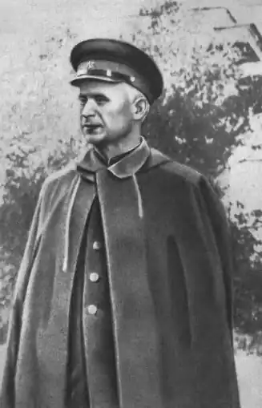
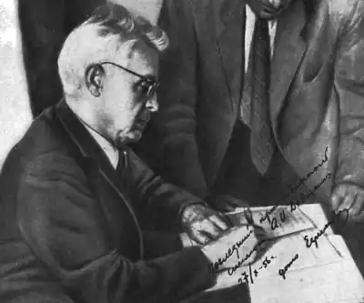

Олександр Довженко
(12 вересня 1894 — 25 листопада 1956)
Стати справжнім мистцем — значить умерти. Цей трагічний парадокс українського пореволюційного відродження здійснився і на Довженкові, хоч був він ще найбільш щасливий із творців Розстріляного Відродження. Перші зрілі фільми Довженка — "Звенигора" (1928), "Арсенал" (1929), "Земля" (1930) — завоювали йому цілии світ; але відібрали Україну, підрізали його творчі крила, вкоротили йому віку. Користуючись залізною завісою, маючи Довженка у себе в полоні в Москві, Росія так заховувала від світу трагедію Довженка, що її не помітили навіть найпалкіші прихильники його мистецтва в Европі й Америці. А оцінили його у вільному світі надзвичайно високо й щедро. У періодичній пресі і в товстих фахових курсах з історії кіна, нарешті, в постанові журі Міжнародної виставки в Брюсселі 1958 року Довженко визнаний як один із першого десятка провідних мистців цілої 60-річної історії мистецтва фільму. "Перший поет кіна" — так назвав його Левіс Джекоб у своїй "Історії американського фільму" (видання 1939 і 1947); "Земля" Довженка мала глибокий вплив на молодих кіномистців, зокрема Франції і Англії", — пише Жорж Садуль у своїй "Історії мистецтва кіна" (Париж, вид. 1949 і 1955); найкращі японські фільми "Роша мун" і "Ворота пекла" зроблені під впливом Довженка — твердить Артур Найт у своїй книжці "Найживіше мистецтво. Панорамна історія кіна" (Нью-Йорк, 1957); "Земля" Довженка —— це твір генія; йому мусіли відступити перше місце російські кіномистці Ейзенштейн і Пудовкін — пише Айвор Монтегю у своєму есеї "Довженко — поет життя вічного" (міжнародний кіноквартальник SIGHT AND SOUND, Лондон, ч. 1, літо 1957). Це лише кілька прикладів із сотень. Довженка визнали в світі справді беззастережно. Західні кінознавці звернули увагу на різкий занепад творчого генія Довженка після "Землі", але ніхто нічого не сказав про причини. Правда, польський часопис у Варшаві "Trybuna Ludu" (4 січня 1957) у статті К. Тепліца обережно, та все ж досить виразно зазначив, що Довженкові "не дали розвинутись повністю", що його змусили замовчати і що "великий поет України, творець мистецтва так сильно національного, що аж вселюдського, замовк у половині слова, залишаючи, однак, по собі кілька творів, які назавжди залишаться в історії фільмового мистецтва як явище неповторне і велике". Так, але Польща тепер не належить до "Заходу". На Заході майже не знають про роки погрому України і її культури (1930—34) і про те, що Довженко за свої фільми "Звенигора" і "Земля" був проклятий у пресі як "український буржуазний націоналіст", що він стояв під загрозою розстрілу. "Мене заарештують і з'їдять", — казав він тоді у родині знаного маляра Василя Кричевського (О. Плавський. "Олександер Довженко", УКРАЇНСЬКА ЛІТЕРАТУРНА ГАЗЕТА, Мюнхен, ч. З, 1957). Довженко подбав про те, щоб нащадкам було ясно, що з ним сталося: він 1939 року написав "Автобіографію" (опублікована посмертно в київському журналі "Дніпро" за грудень 1957), а також залишив свої передсмертні "Записні книжки", що по його смерті появилися в уривках під заголовком "Нотатки і матеріяли до "Поеми про море"" ("Дніпро", чч. 6 і 7, 1957). Довженко пише в "Автобіографії" про те, що сталося з ним після випуску "Землі": "Радість творчого успіху була жорстоко подавлена страховинним двопідвальним фейлетоном Дем'яна Бєдного під назвою "Философы" в газеті "Известия". Я буквально посивів і постарів за кілька днів. Це була справжня психічна травма. Спочатку я хотів був умерти". Довженко спробував був одкупитись фільмом про індустріялізацію — "Іван" (1931), але нападки на нього ще більше загострились. Чи то з власної ініціятиви, а чи, може, й за порадою "згори" — Довженко 1934 року тікає з Києва (де тоді масово арештовували і стріляли українську інтелігенцію) до Москви і подає листа товаришеві Й. Сталіну з проханням "захистити мене й допомогти мені творчо розвиватися". Стероризувавши Довженка і заборонивши його фільми, Сталін зіграв ролю його спасителя, записав його у російські кіномистці, поставив його на працю в Мосфільмі, сам дав йому теми для фільмів, послав на Далекий Схід. А тим часом міжнародний успіх "Звенигори", "Арсеналу" і "Землі" присвоїв російській кінематографії. Це останнє не було трудно: на Заході мало хто бере серйозно конституцію СРСР як союз рівноправних республік; російське і совєтське, СРСР і Росія — там часто сприймають як синоніми. Довженко у зустрічах із закордонними кінознавцями і кіномистцями мусів видавати себе не за українського, а за "совєтського". Він мусів прилюдно вдавати із себе щасливого і байдужого до розгромленої України: "Стоячи на березі Тихого океану і дивлячись на захід, я згадував Україну, і вона постала перед моїми очима у своєму справжньому розмірі, десь там далеко на заході в лівому кутку, і це помножило мою гордість громадянина великої Радянської країни". За темами Сталіна Довженко поставив фільми "Аероград" (1935), "Щорс" (1936—37) і "Мічурін" (1948). Усього тільки три фільми за 22 роки вавилонського полону в Росії! і ні один із них не дорівнювався його "Землі", не додавав нічого до тієї міжнародної слави, що її він здобув своїми українськими фільмами, зробленими лише за три роки в бідних умовах українських кінофабрик. Це марнотратство генія в чужому полоні точило здоров'я Довженка. "Мені зараз сорок п'ять років. Признаюсь, я дуже втомився", — пише він 1939 року. В його душі ставались величні уявні українські кінотвори, він уже зібрався писати сценарій для свого фільму за повістю Гоголя "Тарас Бульба" — Сталін змусив його робити "Мічуріна" (тоді як шанованого Довженком геніяльного українського садовода Семеренка Москва замучила в концтаборі). Між іншим, в "Мічуріні", першім кольоровім фільмі Довженка, є такий момент: творець нових форм, утративши свою дружину, остався ізольований, самотній, невизнаний. З яскравих кольорів саду трагічна постать садовода переходить раптом у чорноту вітряної осінньої ночі, у вихори сухого листя, в самотність, у смерть... Це ситуація Довженка після заборони "Землі" і вигнання з України. Друга світова війна викликала була надії в Довженка на якісь переміни в загальній ситуації, вона дала йому змогу приглянутись знову ближче до України (він зробив хронікальні фільми "Визволення" — 1941, "Битва за нашу рідну Україну" — 1943 та "Перемога на Правобережжі" — 1945). Він побачив, що нова велика руїна не знищила Україну остаточно, але відродила її національний вільнолюбний дух. Цей духовий і політичний ріст та героїзм української людини надхнув Довженка написати "Повість полум'яних літ" (1944—45). Проте надії на ліпше були розвіяні новим погромом України 1946—52 років. Довженко, замість ставити "Повість полум'яних літ", мусить робити давно загаданий Сталіним фільм про Мічуріна, а потім писати сценарій "Відкриття Антарктиди" (1952), в якому, згідно з тодішньою вимогою ЦК КПРС, він виголошує "ура!" не тільки у всьому ідеальним "русскім людям", але і російським царям Олександрові І і Петрові І. Можливо, це були найчорніші роки в житті Довженка, дарма що він тоді був високопоставленим російським вельможею із дачею в Пєрєдєлкіно коло Москви та з усіма можливими орденами і титулами. Цей "вельможа" був в'язнем. Він не мав права вернутись додому, на Україну. Тільки в другій половині 1952 року, коли корейська війна і близький кінець Сталіна породили почуття грядущих перемін, удалось Довженкові вирватись в Україну, на Дніпро, до Каховського будівництва, яке він пообіцяв зробити об'єктом свого нового фільму. Його особисті записні книжки, про посмертну публікацію яких у журналі "Дніпро" ми вже згадували, одначе показують що Довженко задумав фільм-реванш, фільм про вічне море українського життя, фільм, у якому він хотів урятувати Запорозьку Січ і Великий Луг, що мали піти під воду, і в якому мала встати Україна, що вийшла неподоланою із терору 30-х років і другої світової війни. Фільм ще одної перемоги життя над смертю. В тих записних книжках (хоч вони не опубліковані повністю) видно, як зберіг свою душу під московськими орденами син Розстріляного Відродження. Зустріч з Україною наче воскресила його. Той самий Довженко, що писав для Сталіна про маленьку Україну "в лівому кутку" з перспективи Далекого Сходу і "совєтського патріота", тепер відповідає інженерам, що кличуть його їхати з ними на Схід: "Бажаю вам щастя. Але я останусь на Дніпрі..." і потім записує: "Я дивлюсь на синій Дніпро, слухаю плескіт хвиль. Нічого дорожчого у світі немає для мене. Я не хочу вже і нізащо не розлучуся з моєю рікою. І якщо судилося мені зробити ще щось красиве і велике в житті, то тільки на її берегах, ласкавих і чистих… Ніколи ще я не був таким, ніколи так не відчував життя і не був так переповнений любов'ю до свого народу… Річко моя, життя моє… чого так пізно прийшов до твого берега, теплого і чистого?"… "Коли мені пощастить написати сценарій в доброму здоров'ї і я не втрачу працездатности, я зроблю фільм свій на Київській студії... Я ніби помолодів душею, збагатшав і став людяним і чистим. Я нікуди не хочу їхати. Я бачу прояви краси мого народу, і серце моє переповнене хвалою". Довженка (точно як і Остапа Вишню по повороті з російської каторги) захоплює, що українська людина не змаліла, а виросла в невимовних трагедіях терору 30-х і війни 40-х років: "Виріс народ розумово, політично, морально, особливо після війни і, звичайно, за війну так, як ні один народ у світі". І прямо у відповідь на тодішню розгнуздану офіційну пропаганду якоїсь расової і культурної вищости російського народу Довженко, який при всьому своєму полум'яному українському патріотизмі завше був далекий від шовінізму, записує: "Ми перший народ у світі, перший, і кращий, і достойніший". Зустріч із звичайною українською хатою потрясає поворотця з російського полону до глибини душі: "Білі рідні стіни з рушниками біля стелі, з двома темними сволоками. Чисто. У мене свято на душі. Як давно не був я в хаті. Як одірвався од народу. Хто одірвав мене? І що взагалі можна творити, одірвавшись од народу? Можна втратити найменше розуміння правдивого життя". У цих словах Довженко прямо сказав західним прихильникам його мистецтва, чому його творчість занепала після заборони його фільму "Земля". 15 жовтня 1952 року в Каховці Довженко нотує, що почав писати сценарій: "Учора почав писати сценарій.